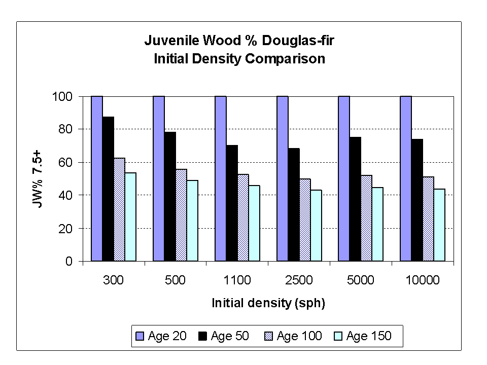
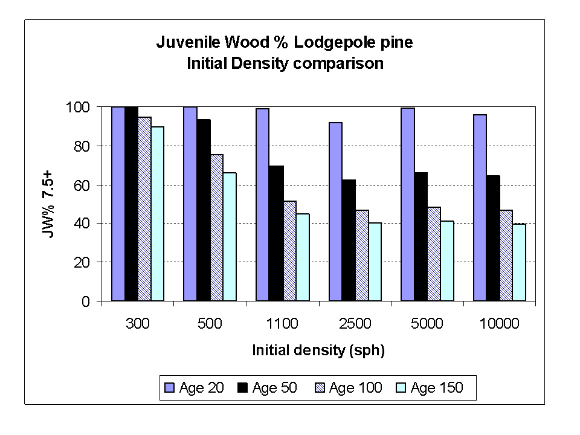
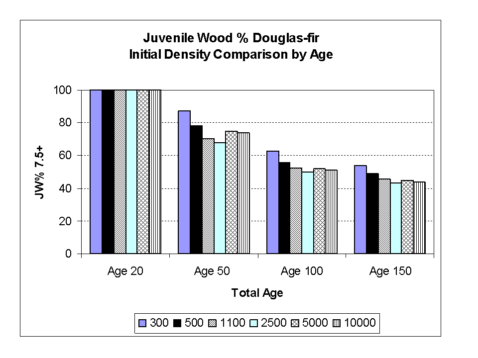
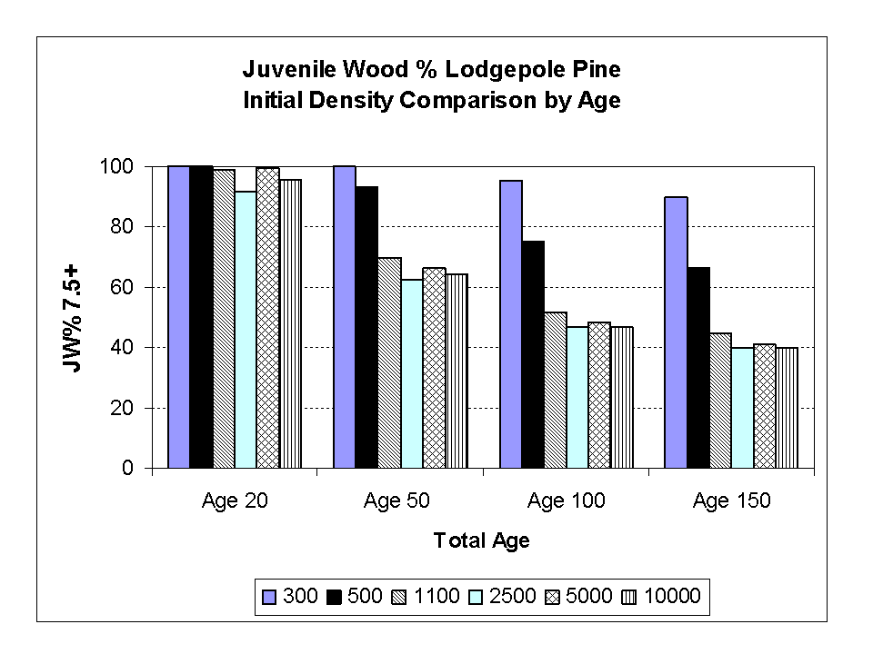
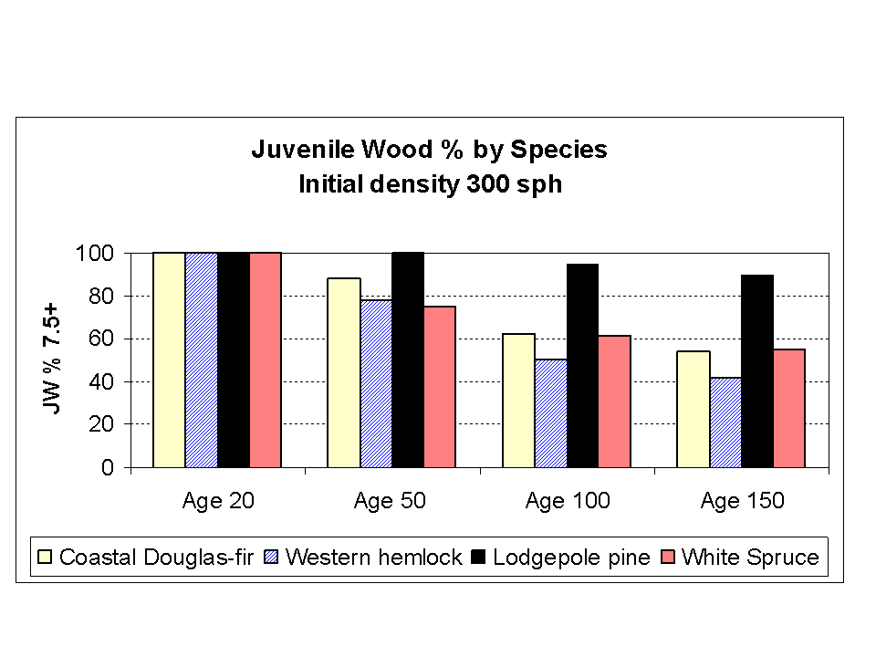
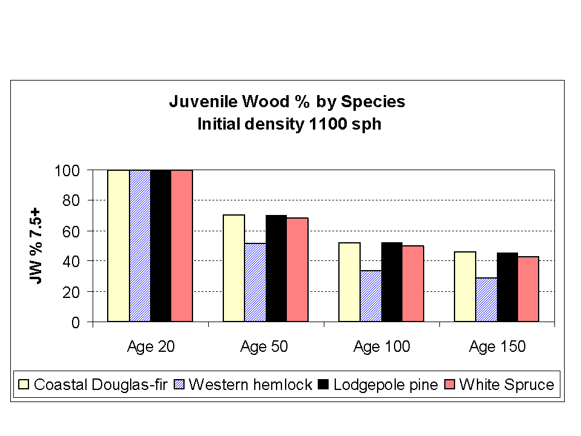
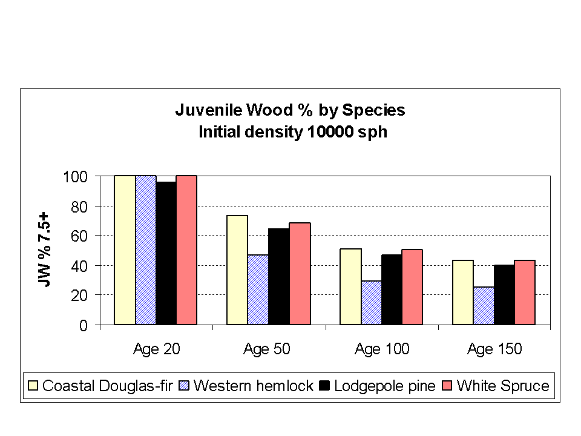
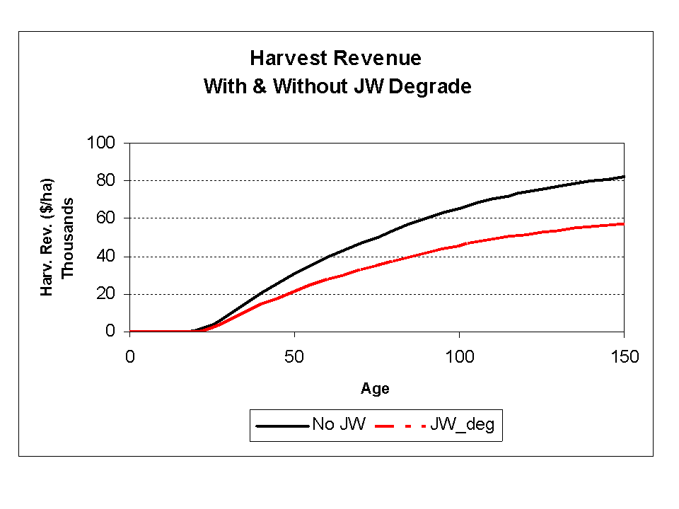
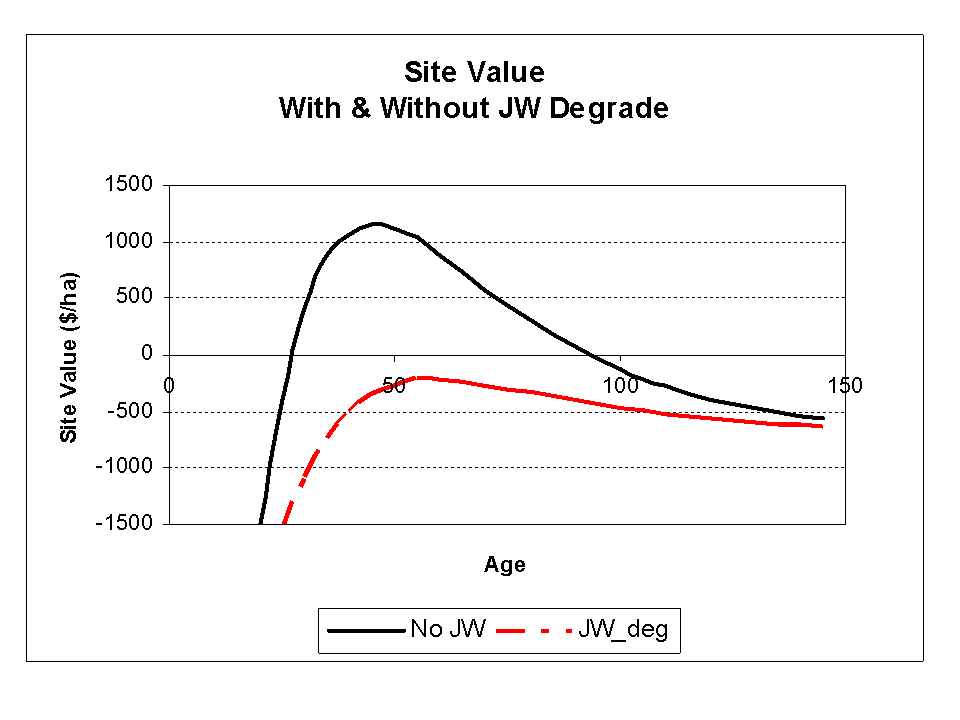

In this Topic Hide
Note: The examples below were all developed with an earlier version of TIPSY.
Two series of TIPSY runs were made as follows:
Six runs using coastal Douglas-fir on site index 30 with initial planting densities of 300, 500, 1100 and 2500 stems per hectare (sph), and natural regeneration densities of 5000 and 10000 sph. Regeneration delay for planted stands was 0 years and 2 years for natural regenerated stands. No operational adjustments were used in these runs.
Six runs using lodgepole pine on site index 20 with initial planting densities of 300, 500, 1100 and 2500 sph, and natural regeneration densities of 5000 and 10000 sph. Regeneration delay for planted stands was 0 years and 2 years for natural regenerated stands. No operational adjustments (OAFs) were used in these runs.
Custom output tables were generated with the following variables: ages (TIPSY and Breast Height), top height, number of trees per ha. (7.5+), total volume (7.5+), juvenile wood total volume (7.5+), and juvenile wood total % (7.5+).
These tables were used first to generate bar charts to show the relationship between the juvenile wood % (total volume 7.5+) as a function of TIPSY Age for the six initial densities.


Figures 1 and 2.
Figures 1 and 2 show that the juvenile wood % decreases as the trees get older for all the densities. In the case of lodgepole pine (Figure 2) the lower densities (ie. 300 and 500 sph.) show larger percentages of juvenile wood when compared to the higher planting densities.
Secondly, bar charts were generated to observe the relationships between juvenile wood % (total volume 7.5+) and initial densities for TIPSY ages 20, 50, 100 and 150 respectively.


Figures 3 and 4.
Figures 3 and 4 show that the juvenile wood % decreases as initial density and age increase. At age 20 the juvenile wood is at or close to 100% for almost all the densities, while at older ages the juvenile wood ranged from 100 to 40% as a function on increasing planting densities from 300 to 10000 sph.
To show the effect of planting density on the amount of JW volume, four series of TIPSY runs were done as follows:
Three runs using coastal Douglas-fir on site index 30 with initial planting densities of 300 and 1100, and with a natural regeneration density of 10000 sph. Regeneration delay for planted stands was 0 years and 2 years for natural regenerated stands. No operational adjustments were used in these runs.
Three runs using western hemlock on site index 30 with initial planting densities of 300 and 1100, and with a natural regeneration density of 10000 sph. Regeneration delay for planted stands was 0 years and 2 years for natural regenerated stands. No operational adjustments were used in these runs.
Three runs using lodgepole pine on site index 20 with initial planting densities of 300 and 1100, and with a natural regeneration density of 10000 sph. Regeneration delay for planted stands was 0 years and 2 years for natural regenerated stands. No operational adjustments were used in these runs.
Three runs using white spruce on site index 20 with initial planting densities of 300 and 1100, and with a natural regeneration density of 10000 sph. Regeneration delay for planted stands was 0 years and 2 years for natural regenerated stands. No operational adjustments were used in these runs.
After the runs were completed, bar charts were generated to observe the relationships between juvenile wood % (total volume 7.5+) for TIPSY ages 20, 50, 100 and 150 as related to the initial densities 300, 1100 and 10000 sph respectively.



Figures 5, 6 and 7.
Figures 5, 6 and 7 show that the juvenile wood % decreases as initial density and age increase. At age 20 the juvenile wood is at or close to 100% for almost all the densities and species, while at older ages the juvenile wood ranged from 100 to 25% depending on the species and density. The differences among the JW % prediction among the species are related to the methodology used to determine the JW-MW transition height.
Note: This example was produced with an earlier version of TIPSY using the TIPSY Economist, which was replaced by FAN$IER in later TIPSY versions. Results are similar. JW degrade refers to Lumber (JW Adj.).
To show the effect of rotation age on stand value, two TIPSY runs were done as follows. For the first run we used lodgepole pine on site index 20 with an initial planting density of 1100 to generate an economic analysis using the default economic specifications for the Southern Interior/Chilcotin/SBPS/10% Slope. The standard default values were used for the discount assumptions, silviculture costs, harvest costs, milling costs, other costs, and the dimensional lumber and chips prices. The second run was the same as the first, but we manually reduced the prices in the TIPSY Economist for dimensional lumber and chips by 30% to account for the JW value degrade.
AGENCY : MOFR Research Branch TIPSY Version 4.2 VS2008 12
PROJECT : Experimental SINDEX Version 1.42
STAND
GEOGRAPHY: Southern Interior/Chilcotin/SBPS/10% Slope
ESTABLISHMENT: Regen delay = 0; Target Density = 1100 trees/ha (Planted)
SPECIES
100% LODGEPOLE PINE; Site Index = 20.00
Site curve: *Thrower (1994)
Top Ht @ bh age 50 (m) = 20.00 (base)
Stock ht = 13cm
--------------------------------------------------------------------------------------
HARVEST SUMMARY
| |
|TIPSY Top | Site Harvest Conversion
| Age Ht | MAI Value NPV Volume Revenue Cost
| (yr) (m) |(m3/ha) ($/ha) ($/ha) (m3/ha) ($/ha) ($/ha)
--------------------------------------------------------------------------------------
@Max Mean An Inc (MAI) Physical Rotation: max MAI
Harvest DBH 12.5+ 62.0 21.6 5.24 980 894 325 41010 23124
@Max Site Value (SV) Economic Rotation: max SV
Harvest DBH 12.5+ 51.0 19.3 5.07 1156 1000 259 31600 19199
--------------------------------------------------------------------------------------
JW wood degraded by reducing the dimensional lumber prices by 30%
--------------------------------------------------------------------------------------
HARVEST SUMMARY
| |
|TIPSY Top | Site Harvest Conversion
| Age Ht | MAI Value NPV Volume Revenue Cost
| (yr) (m) |(m3/ha) ($/ha) ($/ha) (m3/ha) ($/ha) ($/ha)
--------------------------------------------------------------------------------------
@Max Mean An Inc (MAI) Physical Rotation: max MAI
Harvest DBH 12.5+ 62.0 21.6 5.24 -207 -189 325 28685 23124
@Max Site Value (SV) Economic Rotation: max SV
Harvest DBH 12.5+ 60.0 21.3 5.23 -205 -185 314 27604 22419
--------------------------------------------------------------------------------------
Table 2. Physical and economic rotation ages with and without JW degrade


Figures 8 and 9.
Figure 8 shows the harvest revenue as a function of age for the runs with and without JW degrade, and Figure 9 shows the site value as a function of age for the runs with and without JW degrade. From these figures and Table 2 it can be concluded that when the JW degrade is considered the physical rotation age is not affected (i.e. 62 yrs. in both cases), but the economic rotation increased by 9 years (i.e. from 51 to 60 yrs.). The corresponding site value for JW degrade was -205 $/ha and without degrade was 1156 $/ha.